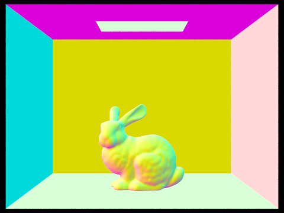

Part 1
To generate a ray we first map a point in image space to a point on the sensor in camera space using the horizontal and vertical field of view. This gives us the direction for the ray. We can then use the camera-to-world rotation matrix to get our final ray in world space. Then we need to figure out the radiance for each pixel in image space. We can do this by using our generated rays to figure out the radiance along the ray and using Monte Carlo sampling to estimate the overall radiance for each pixel.
To find the intersections a ray has with a triangle or sphere, we can simply apply the formulas from lecture slides, which factor in things such as the points of the triangle, center and radius of the sphere, and origin and direction of the ray. Doing this gives us points of intersection as well as the time of the intersection. We can use the point of intersection to render the image. We can use the time of intersection to only account for the closest intersection, so that objects properly block rays from hitting further objects.
The triangle intersection algorithm I used was the Moller Trumbore Algorithm from Lecture 9. This algorithm factors in the points of the triangle and the origin and direction of the ray to give us t (time of intersection) and b1 and b2 (barycentric coordinates for the intersection point).


Part 2
To construct the BVH we first loop through all primitives, expanding the bounding box to include all of them and figuring out the minimum and maximum x, y, and z values. If we have few enough primitives we can just return a leaf node. Otherwise, we find the longest axis based on the minimum and maximum values and split this axis in half geometrically. We then partition all our primitives into a left and right portion based on this midpoint and recursively construct the left and right nodes accordingly.
normal shading with BVH (-s 64 -r 480 360), dragon in 1.2973s, CBlucy in 1.0255s, CBBunny in 0.9423s, blob in 1.8825s:


Results when using parameters -t 8 -r 800 600. The cow took 6.8793s without BVH and 0.0477s with. The beetle took 9.4634s without and 0.0305s with. The beast took 117.1420s without and 0.0373s with. The bunny took 65.5403s without and 0.0367s with. As we can see BVH makes a huge difference for these renderings. While the more complex renderings quickly scaled up to take 1-2 minutes without BVH, the time it took with BVH stayed relatively similar at only 0.03-0.04 seconds.
Part 3
For hemisphere direct lighting we generate n (number_of_lights * ns_area_light) samples to get a Monte Carlo estimate. For each sample we get a random direction uniformly across the hemisphere by using hemisphereSampler. We then cast a ray in this direction from the given intersection point to determine the radiance coming from that random direction. After that we apply the reflection equation, plugging in the incoming and outgoing vectors, the radiance coming from the random direction, and the pdf (1 / (2 pi)). We sum the values for all the samples and divide by the number of samples to finish our Monte Carlo estimate.
For the importance sampling version, we generate ns_area_light samples per area light and one sample per point light to get a Monte Carlo estimate. For each sample we use sample_L to sample a random point on the light and cast a ray towards that point. If the ray has an intersection, there is no direct path to the light so we don't add to the total radiance. Otherwise, we add the radiance from the light using the reflection equation. We sum all the sample values and divide by the number of samples to finish.
in order: CBbunny hemisphere, CBbunny importance, lambertian spheres hemisphere, lambertian spheres importance
in order: 1 light ray, 4 light rays, 16 light rays, 64 light rays
We can see the noise levels decrease across the entire image when increasing the number of light rays, but this is especially apparent in the soft shadows, such as the area to the left of the rabbit. In the first image we see scattered black spots, while in the last image we see soft shadows and not as much noise even with only 1 sample per pixel.
Hemisphere sampling creates many dark spots all over the image because with only one area light at the top of the box it's somewhat likely we never sample the light even if we take many samples. In contrast, lighting sampling guarantees we send a ray in the direction of a light for every sample so we see much more consistent results across the pixels. There aren't spots where we got unlucky and never sampled a light. We can clearly see this when comparing the bunny and lambertian sphere renderings shown above. The left (hemisphere) images have spots all over where our uniform sampling never hit the light while the right (importance) images are very smooth.
Part 4
We first set the ray depth to be the max depth in raytrace_pixel. In at_least_one_bounce_radiance we immediately return the 0 vector if depth is <= 0. We then flip a coin with 0.65 chance to continue (0.35 termination) and if the flip is false we return just the one_bounce_radiance. Otherwise, we cast a ray in a random direction with sample_f and find the next intersection. If there is no intersection we return the one_bounce_radiance. Otherwise, we recursively call at_least_one_bounce_radiance on the next intersection and ray, making sure to set the depth of the new ray to the depth of the old ray - 1. We plug the radiance we get from this recursive call into the reflection equation (same as previous parts but we also divide by 0.65, the continuation probability). Finally, we return the one_bounce_radiance + the value from the reflection equation.
global illumination 1024 samples per pixel (-s 1024 -l 4 -m 5 -r 480 360):
only direct illumination vs only indirect illumination (-s 1024 -l 4 -m 5 -r 480 360):
CBbunny different max ray depths (-s 1024 -l 4 -r 480 360) in order: 0, 1, 2, 3, 100

different sample-per-pixel rates in order (-l 4 -m 5 -r 480 360): 1, 2, 4, 8, 16, 64, 1024
Part 5
For adaptive sampling we start with the same ray tracing from part 1. We keep track of the total illuminance and the sum of squared illuminances as we loop. If our sample number is a multiple of the samplesBerPatch (other than 0), we check if the stop condition is met by applying the given formulas. If we hit the stop condition we update num_samples to be the current number of samples and break. Otherwise num_samples remains as ns_aa. Everything else remains the same.
adaptive sampling image and rate (-s 2048 -a 64 0.05 -l 1 -m 5 -r 480 360):
website link: https://cal-cs184-student.github.io/sp22-project-webpages-huangshawn1/